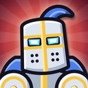

Delete your account
Last updated: October 28, 2026
This page is for Dungeon Delve, the game by Zyrus Ian Crisostomo on Google Play and the App Store. You can delete your account in the game, or ask us to delete it.
In the game
- Open Dungeon Delve and tap your name at the top left.
- Tap Settings.
- Tap Delete Account, then Delete.
Your phone needs to be online. The game deletes your account at once and starts again as a new player. It can't be undone.
Without the game
Email zyrus@zyrusworks.com with the subject “Delete my Dungeon Delve account”. Include your player ID: it is in the game's Settings, under your sign-in, starting with “ID”. We delete the account within 30 days and reply when it's done.
If you made an email account, install the game on any phone, sign in with your email in Settings, and delete the account there; or email us from that address. If you signed in with Google Play Games and no longer have the game, install it on an Android phone and sign in with the same Google account: your player ID is then in Settings, and you can delete the account there. If you only ever played as a guest and the game is gone, its cloud copy is tied to a random player ID that nobody can sign in to again, and we can't tell which one was yours.
What is deleted
- Your player ID, and its link to your Google Play Games account.
- The email account you signed in with, if you made one: its email address and password.
- The copy of your progress in the cloud, and any earlier copy kept aside with it: your hero, items, gems and everything else in the game, your profile's name and picture, and your record.
- The record of what you bought that our server keeps to check purchases (order numbers, what was bought and when).
- Your place in the Arena: your name and picture are taken off its groups, so that no one is offered you, and your fights off your own record.
- When you delete in the game, the progress on that device too.
What is kept, and for how long
- Messages you sent in the World chat, which Vivox deletes 7 days after each was sent.
- A fight you had in the Arena against another player, in their record of fights, with your name, picture and hero as they were, until it is one of their 20 oldest; and a small record of your Arena league and the fights you used that day, without your name, picture or fights, so that leaving can't be used to fight again.
- Chat reports you made or that were made about you, and any ban, for up to 2 years after the report or the end of the ban, so that a banned player can't simply start again.
- Reports of crashes and errors, which Unity keeps for 90 days. They carry a random installation ID, not your player ID, so they can't be picked out as yours.
- Unity's server logs, which may hold your device's internet (IP) address, for the short time Unity keeps them.
- Your email to us, only as long as we need it to answer you. Ask, and we delete it too.
- Records of purchases, which Apple or Google keep under their own policies, and Unity's own reports of purchases, which we ask Unity to delete when you ask us. Deleting your account doesn't refund anything or cancel the Delver Club: cancel it in your Google Play or App Store settings.
- Google's own record that you played Dungeon Delve with Google Play Games, which you manage in your Google account.
Subscriptions
Deleting your account doesn't cancel the Delver Club. Cancel it in your Google Play or App Store subscriptions.
More about what the game keeps is in our Privacy Policy.